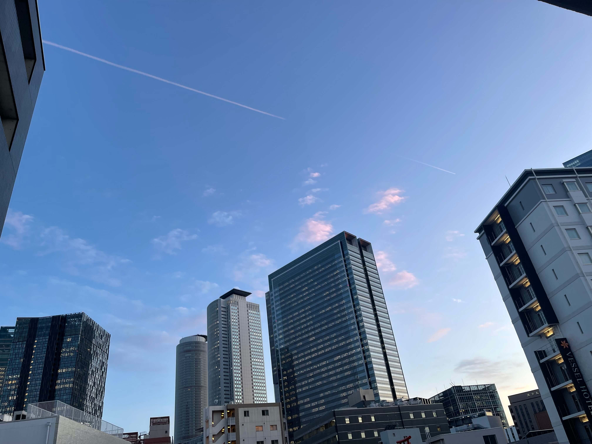

A New Beginning
As the aircraft slowly descended toward Japan, I looked out of the window expecting to see a city. Instead, I saw an airport surrounded entirely by the sea. I was amazed. I had never imagined an international airport could be built in the middle of the ocean. When the plane touched down at Chubu Centrair International Airport, I realized I had truly arrived in a place unlike anywhere I had ever been before. Everything around me felt unfamiliar. The language, the people, the streets, the train stations, even the quietness of the city was different from anything I had ever experienced in Nepal. Only a day earlier I had boarded my first international flight. Now I found myself standing in a country I had only seen in books, videos, and photographs.
I had travelled thousands of kilometers away from my family, friends, and the mountains of Pokhara. Although I felt excited, I also carried uncertainty. I couldn't speak Japanese fluently, I didn't know the city, and everything around me felt new. Yet deep inside I believed that every challenge would become another lesson.
During those first weeks I slowly learned how to travel by train, shop at Japanese convenience stores, communicate with people, and adapt to a completely different culture. Every small achievement gave me confidence. Every mistake became another opportunity to grow.
"Sometimes the greatest journey is not across countries, but across the person you become."
Looking back today, I realise that moving to Japan changed far more than my address. It taught me independence, patience, discipline, and the courage to step outside my comfort zone. Japan gradually transformed from a foreign country into my second home.
What Japan Gave Me
- Confidence to live independently.
- A new language and culture.
- Friendships from different countries.
- Education and professional experience.
- Countless unforgettable memories.
My journey in Japan lasted nearly six years, but its lessons will stay with me for the rest of my life. This was not simply the beginning of my life in another country. It was the beginning of a completely new version of myself.